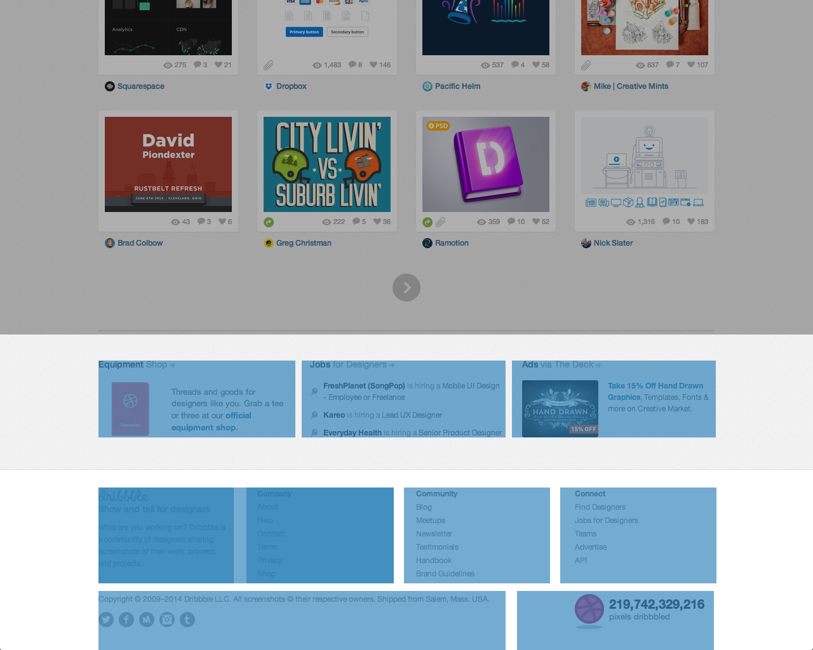
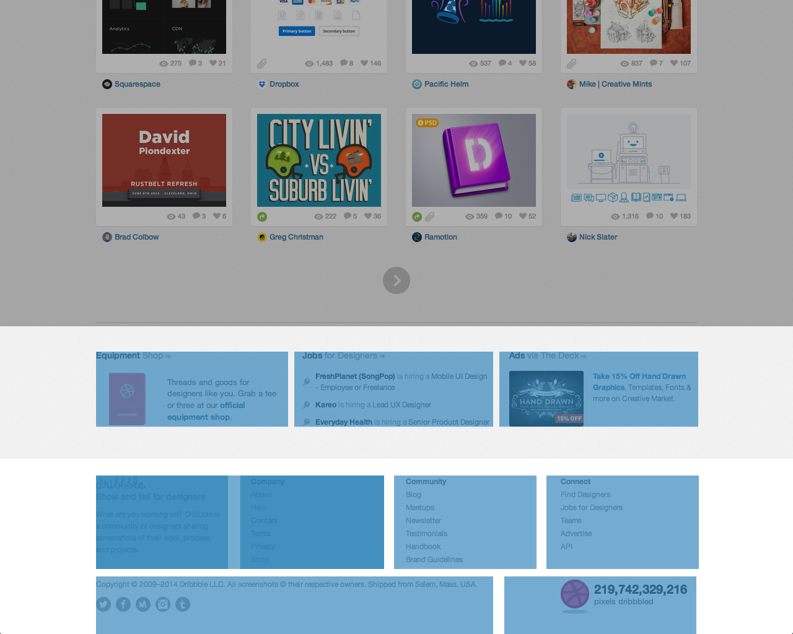
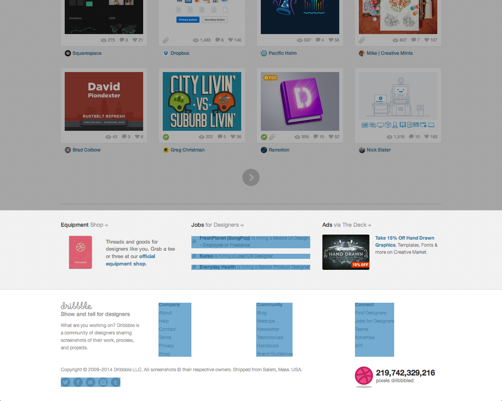

Examples
Now that we’ve defined “Modular CSS” and talked about the process of discovering and writing patterns, let’s take that knowledge and walk through some real sites and determine how we’d structure our CSS.
Dribbble
- Identify
- Define
- Build
- Combine
- Refine
Identify

Structure & Layout
First, we start by identifying the most reusable modules, the ones used for structure and layout.
- Row
- Cell
- Well
- Grid
Row
The row module handles width-spanning blocks.
- Full-width background colors
- Horizontal padding


Cell
The cell module handles width-limiting.
- Horizontal centering
max-width

Well
The well module handles vertical spacing.
- Top/bottom margin

Grid
The grid module handles grid-based element arrangement.
 

<div class="row"> <div class="cell well"> <div class="grid"> <!-- ... --> </div> </div> </div>
With these modules in place, we have a simple structure that we can use to set up the layout of the site.
Common Patterns
Next, we tackle the common patterns that we’re used to seeing.
- List
- Thumb
- Icon
- Form
- Card
- Bucket
List
We can see that there are a lot of lists throughout the site.

We have a few different types of lists:
- Inline
- Block
- Object (floated)
Thumb
We’ll want a thumb module to handle our user thumbnails and create the circle avatars.
Icon
We’ll need an icon module to handle all the site-wide icons.


Form
Card

Bucket


Unique Patterns
I’m not seeing any unique patterns, but that might change as you build out the site.
Link to code
- Identify
- Define
- Build
- Combine
- Refine
GitHub
- Identify
- Define
- Build
- Combine
- Refine